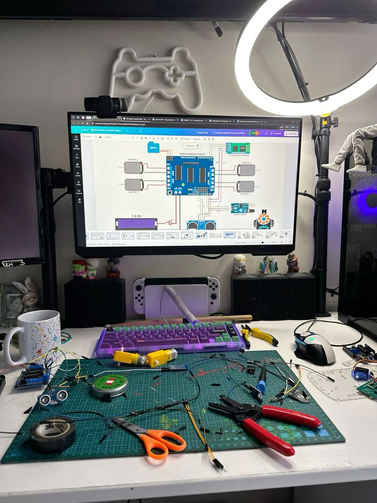
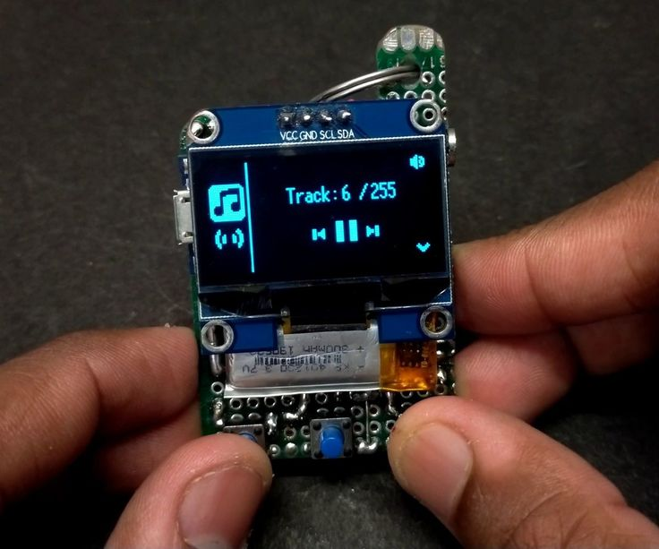
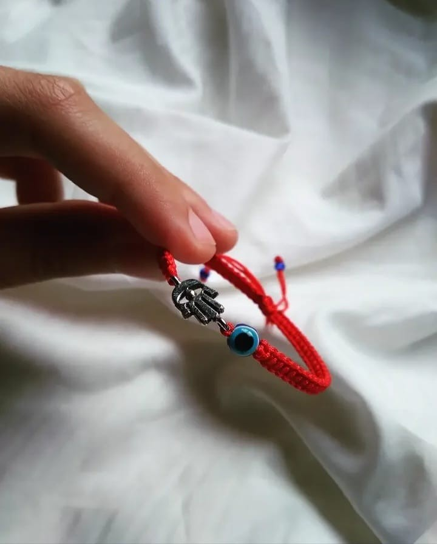
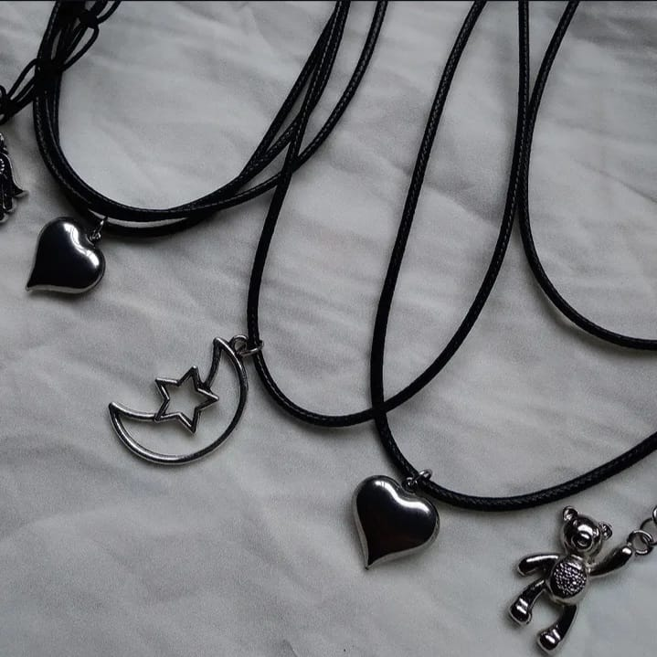
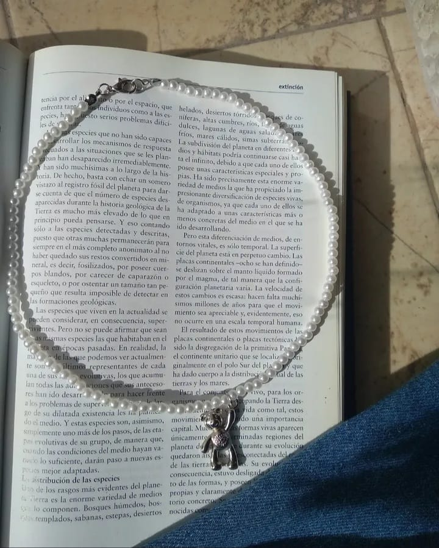
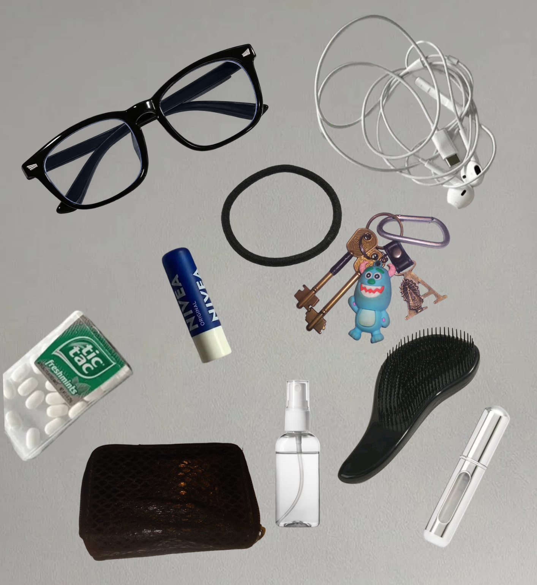
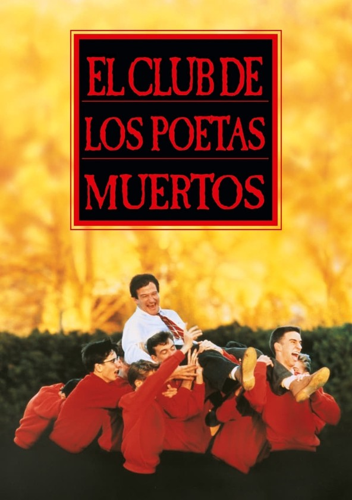
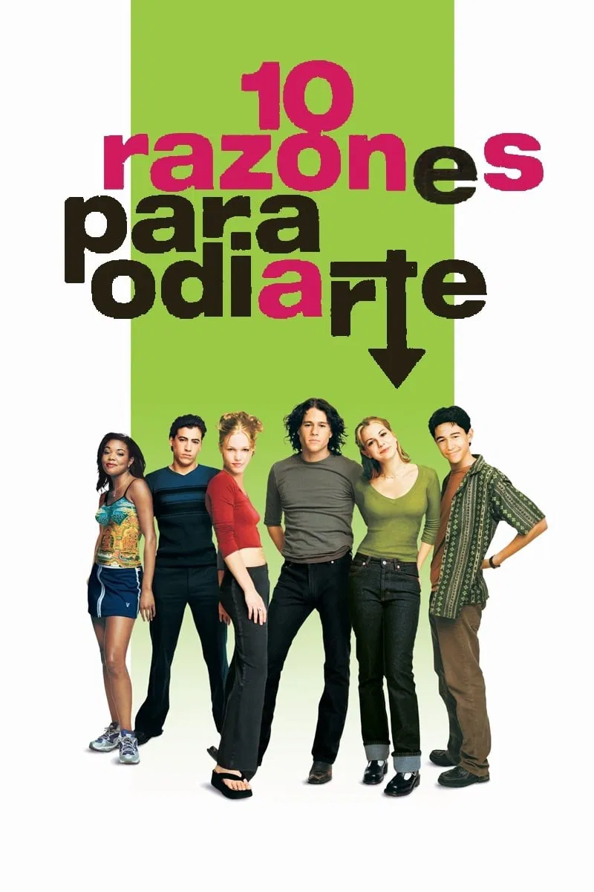

Notas de A.
Un poco sobre mi día a día y mis intereses
Mis intereses: la cultura maker y la creación de accesorios
El movimiento maker es un universo que descubrí hace poco a través de las redes sociales como Instagram, TikTok y YouTube. Me gusta el concepto que promueve "do it yourself" (hazlo tú mismo): la idea de que cualquier persona puede desarrollar habilidades y crear dispositivos o productos aprendiendo sobre la marcha , experimentando ya sea programando, diseñando o con la parte electrónica. Suelo pasar horas viendo a personas que, con o sin experiencia, crean un dispositivo random usando impresoras 3D o con objetos cotidianos que intervienen cambiándole su funcionalidad. No sigo a un creador en específico, pero últimamente me fascina el proceso de la creación de MP3, cabinas de fotos no convencionales y accesorios interactivos. No solo me interesa el resultado final, sino todo ese proceso de bocetos, prueba y error: la parte de hardware, cómo se arma, el uso de placas como Arduino, los cables, los sensores, las pantallas y cómo interactúa todo eso con el código que programan . Guardo estas ideas de proyectos porque quiero conocer más de esto y me motiva, para, en algún momento, hacerlo yo misma. En especial, lo que más quiero aprender es la parte física (el hardware y electrónica); me genera mucha curiosidad para que se utiliza cada pieza ,la lógica que tiene detrás y el armado de cada una de las distintas partes. Este es un video de un proyecto que me interesó


Esa misma filosofía de crear con las manos se traslada a otro de mis grandes intereses: diseñar y armar accesorios. Es algo a lo que le vengo dedicando tiempo hace bastante y que disfruto un montón. En otro momento incluso llegué a vender mis creaciones, y hoy en día sigo haciéndolo, pero por hobbie. Me encanta experimentar con distintas técnicas y materiales: probar hilos, mostacillas, alambres, cadenas, y jugar con las combinaciones de colores y texturas. Hago desde accesorios como pulseras, collares, tobilleras, anillos, diademas y llaveros, hasta tapices. Es un proceso que realmente me genera calma y lo mejor de todo es que con solo enganchar un video en YouTube podés aprender un montón desde cero. De hecho, yo misma sigo aprendiendo técnicas nuevas así todo el tiempo.




Mis objetos indispensables
Hay un par de cosas con las que tengo que salir sí o sí a cualquier lado. Ya sea para ir a cursar o para pasar todo el día afuera, necesito llevarlas conmigo porque sé que en cualquier momento del día las voy a usar. Para empezar, no salgo sin los anteojos , que son claves a la hora de estudiar, leer un libro o estar en la compu. Los auriculares van siempre conmigo para ir escuchando música en el micro o mientras camino, junto con las llaves y la billetera con los documentos y la plata. Para el día a día también sumo cosas infaltables de cuidado personal: el peine , el bálsamo labial,un toque de perfume, las pastillas, el alcohol en spray y una colita de pelo por si necesito atármelo. Con todo esto encima, sé que tengo resuelto mi día a donde sea que vaya.

Volver hacia arribaTop3 de peliculas que veo cuando tengo una semana intensa
Cuando tengo un mal día o estoy cansada, me gusta ver películas porque me distraen y me levantan el ánimo.Estas son mis tres películas favoritas para disfrutar.

Reseña
Titulo: El club de los poetas muertos Director: Peter Weir Género: Drama /comedia Año: 1989 Sinopsis: Años 50. Un nuevo curso comienza en la academia Welton, una escuela privilegiada para chicos de familias adineradas. Pero este año hay un nuevo profesor de literatura inglesa, John Keating, cuyos métodos de enseñanza se alejan bastante de los cánones tradicionales. Para ello incitará a sus alumnos a buscar sus pasiones y desarrollarlas más allá de los rígidos planes de estudio de Welton. Trailer

Reseña
Titulo: Harry Potter y el misterio del principe Género: Fantasia y ciencia ficción Director: David Yates Año: 2009 Sinopsis: En medio de los desastres que azotan a Inglaterra, Harry y sus compañeros vuelven a Hogwarts para cursar su sexto año de estudios; y aunque las medidas de seguridad han convertido al colegio en una fortaleza, algunos estudiantes son víctimas de ataques inexplicables. Harry sospecha que Draco Malfoy es el responsable de los mismos y decide averiguar la razón. Mientras tanto, Albus Dumbledore y el protagonista exploran el pasado de Lord Voldemort mediante recuerdos que el director ha recolectado. Con esto, Dumbledore planea preparar al muchacho para el día de la batalla final. Trailer

Reseña
Titulo: 10 Razones para odiarte Género: Comedia romántica adolescente Director: Gil Junger Año: 1999 Sinopsis: Las hermanas Stratford son muy distintas. La guapa y popular Bianca nunca ha salido con un chico, y Kat, su hermana mayor, es una bruja con muy mal genio, y algo arisca, que se ha propuesto rechazar a cualquier chico que demuestre el más mínimo interés por ella. Desgraciadamente, el estricto reglamento que rige el hogar de los Stratford prohibe a Blanca tener novio hasta que su insoportable hermana tenga uno; situación que parece más que improbable teniendo en cuenta que Kat lleva una vida social desastrosa. Blanca está desesperada por ir al baile de fin de curso. Pero su pretendiente, Cameron, guarda una sorpresa... Trailer